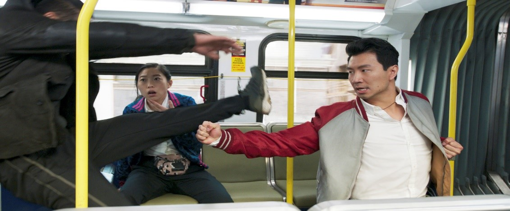
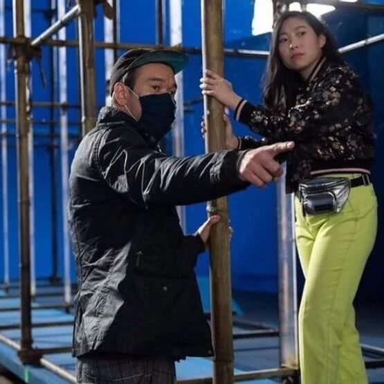

Shang – Chi e Lenda dos Dez Anéis
Um dos filmes que está dando o que falar é Shang-chi, não é à toa que Shang-Chi e a Lenda dos Dez Anéis é oficialmente a maior bilheteria de 2021 nos EUA. Superando em bilheteria o filme “viúva negra.”
No filme da Marvel, Shang-Chi é um jovem chinês treinado em artes marciais, criado sem contato com o mundo exterior. Quando consegue a oportunidade de entrar em contato com o resto do mundo, descobre que o pai não era a pessoa que dizia ser e então se vê na obrigação de se rebelar contra ele. Além da história, uma outra coisa que chama a atenção dos telespectadores são os bastidores do filme.

Durante as filmagens da cena no ônibus, o ator Simu liu, postou um vídeo no Instagram falando que não teve efeitos visuais na cena, ou seja, foi tudo bem ensaiado. Ele conta que foram meses de preparo e ensaio, mas que chegou a se machucar durante as gravações. "Você paga um preço humano por optar por cenas sem efeitos visuais. Os hematomas e arranhões são consequências e, no meu caso, resultaram num inchaço do meu joelho do tamanho de uma bola de tênis no final desse dia. Ainda assim, eles tiveram que me tirar de cima desse ônibus; queria fazer e refazer (a cena) até ela ficar perfeita, e mais um pouco. Amei cada segundo".
Uma outra curiosidade dos bastidores foi que Simu Liu não sabia lutar, ele disse em uma entrevista que seus pais não o deixaram praticar artes marciais quando criança, por acharem perigoso. Então, ele precisou de todo um preparo para o filme, literalmente aprender a lutar. E foi o que ele fez! A preparação começou bem antes do início das gravações do filme. O ator treinou no Canadá e nos Estados Unidos, quando chegou em Sidney, na Austrália, para gravar o longa, ele recebeu mais um treinamento intensivo com especialistas em vários tipos de artes marciais. “Eu, literalmente, senti que estava aprendendo com os melhores do mundo. Passamos por quase todos os estilos de luta imagináveis conhecidos pelo homem, inclusive aqueles que não apareceriam no filme.’’ Ele treinou mais de 5 artes marciais. Todo esse preparo fez com que ele não precisasse de um dublê e pudesse ser o protagonista no máximo de cenas.
Também por trás dos bastidores teve o reconhecimento de Awkwafina, intérprete de Katy no filme. Dada pelo próprio diretor, Destin Daniel Cretton. Em seu Instagram ele postou uma foto com a atriz e legendou:

“@awkwafina é diferente de qualquer artista que já conheci. Nunca vi um cérebro encontrar piadas mais rápido que o dela, e ela me fez rir tanto no set que mal conseguia evitar estragar suas tomadas. Mas a comédia não é o único lugar onde ela brilha, ela também é uma artista carinhosa, presente e íntima, e essa é a parte de seu personagem que eu mais admiro,” declarou. “Há uma sinceridade em suas performances dramáticas que é tão genuína que é difícil rotulá-la como atuação. Não há outro ator como ela na Terra, e temos tanta sorte de tê-la em @shangchi,” concluiu.
O filme ‘Shang-Chi e a Lenda dos Dez Anéis’ está em cartaz nos cinemas brasileiros, e é dirigido por Destin Daniel Cretton.